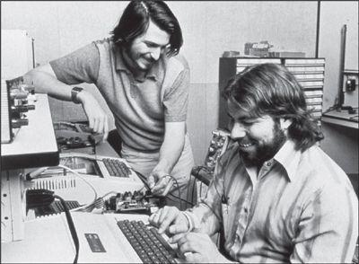

Jobs and Wozniak in the garage, 1976
While a student in McCollum’s class, Jobs became friends with a graduate who was the teacher’s all-time favorite and a school legend for his wizardry in the class. Stephen Wozniak, whose younger brother had been on a swim team with Jobs, was almost five years older than Jobs and far more knowledgeable about electronics. But emotionally and socially he was still a high school geek.
还在麦科勒姆班上的时候，乔布斯碰巧与一个本校的毕业生成了朋友，此人就是斯蒂芬·沃兹尼亚克（StephenWozniak）①。沃兹尼亚克一直是老师最喜欢的学生，并因为在班上展现出的杰出才能而成为全校的传奇人物。他的弟弟曾经和乔布斯一起参加过游泳队，而他本人比乔布斯大了将近5岁，对电子学的了 解也远超乔布斯。但从情商以及社交方面的能力来说，他依然是个高中生极客。
Like Jobs, Wozniak learned a lot at his father’s knee. But their lessons were different. Paul Jobs was a high school dropout who, when fixing up cars, knew how to turn a tidy profit by striking the right deal on parts. Francis Wozniak, known as Jerry, was a brilliant engineering graduate from Cal Tech, where he had quarterbacked the football team, who became a rocket scientist at Lockheed. He exalted engineering and looked down on those in business, marketing, and sales. “I remember him telling me that engineering was the highest level of importance you could reach in the world,” Steve Wozniak later recalled. “It takes society to a new level.”
和乔布斯一样，沃兹尼亚克也从父亲那里学到了很多。但两人学到的东西是不同的。乔布斯的父亲是个高中辍学生，他在修理汽车的过程中学会了如何通过买卖 零部件赚取可观的利润；而人称“杰里”的沃兹尼亚克的父亲弗朗西斯·沃兹尼亚克（FrancisWozniak），是加州理工学院工程系的杰出毕业生，还 是校橄榄球队的四分卫，他十分崇尚工程学并且瞧不起那些从事商业、市场或销售的人。他后来成为了洛克希德公司的火箭专家，设计导弹制导系统。“我记得他告 诉我，工程学是世界上最重要的，”史蒂夫·沃兹尼亚克后来回忆说，“工程学将社会带入了一个新的层级。”
One of Steve Wozniak’s first memories was going to his father’s workplace on a weekend and being shown electronic parts, with his dad “putting them on a table with me so I got to play with them.” He watched with fascination as his father tried to get a waveform line on a video screen to stay flat so he could show that one of his circuit designs was working properly. “I could see that whatever my dad was doing, it was important and good.” Woz, as he was known even then, would ask about the resistors and transistors lying around the house, and his father would pull out a blackboard to illustrate what they did. “He would explain what a resistor was by going all the way back to atoms and electrons. He explained how resistors worked when I was in second grade, not by equations but by having me picture it.”
沃兹尼亚克最早的记忆之一，就是在一个周末去了父亲工作的地方，看到了一些电子部件，父亲“把我跟这些部件一起摆在桌上，这样我就可以拿着玩了”。父亲试着让显示器上的一条波形保持平直，以证明自己设计的电路能够正常工作，而沃兹在一旁看得入了迷。“我能看到，爸爸做的任何事情都是重要的，而且他做得很棒。”那个时候的沃兹就会问父亲各种问题，都是关于屋子里随处可见的电阻和晶体管的，父亲就会拿出一块黑板，给他解释这些部件是干什么的。“他会从原子和电子开始讲起，给我解释电阻是干什么的。我上小学二年级的时候他就给我解释电阻是怎么工作的了，不是用方程式，而是用很具体形象的方式。”
Woz’s father taught him something else that became ingrained in his childlike, socially awkward personality: Never lie. “My dad believed in honesty. Extreme honesty. That’s the biggest thing he taught me. I never lie, even to this day.” (The only partial exception was in the service of a good practical joke.) In addition, he imbued his son with an aversion to extreme ambition, which set Woz apart from Jobs. At an Apple product launch event in 2010, forty years after they met, Woz reflected on their differences. “My father told me, ‘You always want to be in the middle,’” he said. “I didn’t want to be up with the high-level people like Steve. My dad was an engineer, and that’s what I wanted to be. I was way too shy ever to be a business leader like Steve.”
沃兹的父亲还教给了他其他一些东西：绝不撒谎，这深深扎根于他那单纯、不善社交的个性之中。“我父亲信奉诚实，极端的诚实。那是他教我的最重要的事情，我从没有撒过谎，到今天也是这样。”（仅有的例外就是他恶作剧的时候。）除此之外，这位父亲还给儿子灌输了对于极大野心的厌恶，这一点沃兹与乔布斯不同。他们结交40年以后，2010年，在一场苹果公司的产品发布活动上，沃兹回顾了他们之间的这种差异。“我爸爸跟我说，你总是想做一个中庸的人。”他说，“我不想成为一个像史蒂夫那样的高端人物。我爸爸是个工程师，那也是我想做的。我太腼腆了，永远不可能成为像史蒂夫那样的商业领袖。”
By fourth grade Wozniak became, as he put it, one of the “electronics kids.” He had an easier time making eye contact with a transistor than with a girl, and he developed the chunky and stooped look of a guy who spends most of his time hunched over circuit boards. At the same age when Jobs was puzzling over a carbon microphone that his dad couldn’t explain, Wozniak was using transistors to build an intercom system featuring amplifiers, relays, lights, and buzzers that connected the kids’ bedrooms of six houses in the neighborhood. And at an age when Jobs was building Heathkits, Wozniak was assembling a transmitter and receiver from Hallicrafters, the most sophisticated radios available.
到了四年级，沃兹尼亚克成为了他自称为“电子小孩”的一类人。对他来说，盯着一只晶体管要比跟一个姑娘眉来眼去来得容易，他就以矮矮胖胖、有点儿驼背的形象示众，大多数时间他都埋头于电路板中。在乔布斯还在为了一个连他父亲都解释不清的碳精话筒而迷惑的年纪，沃兹尼亚克已经在使用晶体管搭建对讲系统了，这个系统带有放大器、继电器、灯和蜂鸣器，连接了相邻的6座房子中孩子们的卧室。乔布斯还在玩希斯工具盒的时候，沃兹尼亚克已经在组装来自世界上最先进的无线电制造商哈里克拉夫特（Hallicmfters）的发射器和接收器了，他还和父亲一起获得了业余无线电执照。
Woz spent a lot of time at home reading his father’s electronics journals, and he became enthralled by stories about new computers, such as the powerful ENIAC. Because Boolean algebra came naturally to him, he marveled at how simple, rather than complex, the computers were. In eighth grade he built a calculator that included one hundred transistors, two hundred diodes, and two hundred resistors on ten circuit boards. It won top prize in a local contest run by the Air Force, even though the competitors included students through twelfth grade.
沃兹花了大量的时间在家阅读父亲的电子学期刊，他着迷于关于新式计算机的那些故事，比如强大的埃尼阿克（ENIAC）。在接触到布尔代数之后，他惊奇地发现其实计算机系统一点儿也不复杂，而是非常简单。八年级的时候，他基于二进制理论造出了一台计算器，把100只晶体管、200只二极管、200只电阻装在了10块电路板上。在当地一项由空军举办的赛事上，尽管参赛者中还有十二年级的学生，但这台计算器还是赢得了最高奖。
Woz became more of a loner when the boys his age began going out with girls and partying, endeavors that he found far more complex than designing circuits. “Where before I was popular and riding bikes and everything, suddenly I was socially shut out,” he recalled. “It seemed like nobody spoke to me for the longest time.” He found an outlet by playing juvenile pranks. In twelfth grade he built an electronic metronome—one of those tick-tick-tick devices that keep time in music class—and realized it sounded like a bomb. So he took the labels off some big batteries, taped them together, and put it in a school locker; he rigged it to start ticking faster when the locker opened. Later that day he got called to the principal’s office. He thought it was because he had won, yet again, the school’s top math prize. Instead he was confronted by the police. The principal had been summoned when the device was found, bravely ran onto the football field clutching it to his chest, and pulled the wires off. Woz tried and failed to suppress his laughter. He actually got sent to the juvenile detention center, where he spent the night. It was a memorable experience. He taught the other prisoners how to disconnect the wires leading to the ceiling fans and connect them to the bars so people got shocked when touching them.
与沃兹同龄的男孩已开始跟女孩约会、参加各种派对，而他觉得这些都比设计电路更为复杂，他显得更加不合群了。“之前我还挺受欢迎的，但突然间我就被孤立了，”他回忆说，“很长的一段时间都没有人跟我说话。”他找到了一个发泄的办法：搞些幼稚的恶作剧。高中四年级的时候，他做了一个电子节拍器——音乐教室里用来打拍子的、会发出“滴答”声的装置——然后他意识到“滴答”声听上去很像是炸弹定时器的声音。于是他把一些大块电池的标签撕掉，把它们绑在一起，然后放进了学校的储物柜里。他设定好装置，一旦柜门被打开，“滴答”频率就会变高。那天晚些时候，他被叫到了校长办公室。他还以为是因为他又一次获得了学校的最高数学奖。然而，等待他的是警察。校长布吕德先生（Mr.Bryld）在装置刚被发现时就被叫到了现场，他一把抓起那个玩意儿，紧贴胸口，抱着它勇敢地跑到了操场，然后把上面的电线拆掉。沃兹强忍着，但还是控制不住笑了出来。那天他真的被送到了青少年拘留中心，在那儿过丁一晚上。沃兹认为那是一段难忘的经历。他在里面教其他犯人把通到天花板上风扇的电线接到铁窗上，这样一且有人碰到就会被电击一下。
Getting shocked was a badge of honor for Woz. He prided himself on being a hardware engineer, which meant that random shocks were routine. He once devised a roulette game where four people put their thumbs in a slot; when the ball landed, one would get shocked. “Hardware guys will play this game, but software guys are too chicken,” he noted.
对沃兹来说，被电击就好像是获得荣誉奖章一样。作为一名硬件工程师让他很自豪，但这也意味着触电是家常便饭。他曾经发明过一种轮盘赌游戏：四个人把拇指按在槽里，球落下之后，其中的一个会被电到。“搞硬件的人才愿意玩这个游戏，搞软件的都太胆小了。”他这么强调。
During his senior year he got a part-time job at Sylvania and had the chance to work on a computer for the first time. He learned FORTRAN from a book and read the manuals for most of the systems of the day, starting with the Digital Equipment PDP-8. Then he studied the specs for the latest microchips and tried to redesign the computers using these newer parts. The challenge he set himself was to replicate the design using the fewest components possible. Each night he would try to improve his drawing from the night before. By the end of his senior year, he had become a master. “I was now designing computers with half the number of chips the actual company had in their own design, but only on paper.” He never told his friends. After all, most seventeen-year-olds were getting their kicks in other ways.
到了高中四年级，他在喜万年公司（Sylvania）得到了一份兼职工作，人生中第一次有机会在计算机前工作。他从书上自学了FORTRAN语言，并阅读了当时大多数电子系统的使用说明，从数字设备公司（DigitalEquipment）的：PDP-8开始。之后，他研究了最新的微芯片的规格，开始使用这些最新的元器件重新设计计算机。他为自己定的挑战是：使用最少的元器件来实现。“我关上房门，在自己的房间里独自完成了这项工作。”他回忆说。每天晚上，他都会努力在前一天的基础上进一步完善自己的设计。到四年级结束时，他已经成为这方面的专家了。“我设计的计算机，使用的芯片数量只有市面上产品芯片数量的一半，但我的设计还停留在图纸上。”他从没有跟他的朋友提到过这些。毕竟，大多数17岁的孩子都在忙着干其他事情。
On Thanksgiving weekend of his senior year, Wozniak visited the University of Colorado. It was closed for the holiday, but he found an engineering student who took him on a tour of the labs. He begged his father to let him go there, even though the out-of-state tuition was more than the family could easily afford. They struck a deal: He would be allowed to go for one year, but then he would transfer to De Anza Community College back home. After arriving at Colorado in the fall of 1969, he spent so much time playing pranks (such as producing reams of printouts saying “Fuck Nixon”) that he failed a couple of his courses and was put on probation. In addition, he created a program to calculate Fibonacci numbers that burned up so much computer time the university threatened to bill him for the cost. So he readily lived up to his bargain with his parents and transferred to De Anza.
髙中第四年感恩节的周末，沃兹拜访了科罗拉多大学。学校放假了，但他找到了一个工程系的学生，那个人带着他参观了实验室。沃兹尼亚克请求父亲送他去那里读书，尽管州外学生的学费并不是他们轻易拿得出的。他们达成了一个协议：沃兹可以去科罗拉多大学读一年，但一年之后必须转回离家较近的迪安扎（DeAnza）社区学院。1969年秋天抵达科罗拉多之后，沃兹把大把的时间用在了恶作剧上（包括印发大量写着“去你妈的尼克松”的传单），以至于未能通过一些课程的考试，被学校留校察看。此外，他编写了一个程序，不停地计算斐波那契数列，占用了大量的计算机运行时间，学校威胁要他承担费用。为了不让父母知道这些事，他转学到了迪安扎。
After a pleasant year at De Anza, Wozniak took time off to make some money. He found work at a company that made computers for the California Motor Vehicle Department, and a coworker made him a wonderful offer: He would provide some spare chips so Wozniak could make one of the computers he had been sketching on paper. Wozniak decided to use as few chips as possible, both as a personal challenge and because he did not want to take advantage of his colleague’s largesse.
在迪安扎愉快地度过了一年后，沃兹尼亚克决定休学去赚钱。他在一家为交通部门生产计算机的公司里找到了工作，一名同事还给了他丰厚的馈赠：将一些多余的芯片提供给沃兹，让他将一直停留在图纸上的计算机变成现实。沃兹尼亚克决定使用尽可能少的芯片，一方面作为对自己的挑战，另一方面也是因为不想利用同事的慷慨。
Much of the work was done in the garage of a friend just around the corner, Bill Fernandez, who was still at Homestead High. To lubricate their efforts, they drank large amounts of Cragmont cream soda, riding their bikes to the Sunnyvale Safeway to return the bottles, collect the deposits, and buy more. “That’s how we started referring to it as the Cream Soda Computer,” Wozniak recalled. It was basically a calculator capable of multiplying numbers entered by a set of switches and displaying the results in binary code with little lights.
沃兹的大多数工作都是在附近一个朋友家的车库中完成的，此人就是当时还在家园高中读书的比尔·费尔南德斯（BillFernandez）。为了让工作顺利完成，他们喝了很多克雷格蒙特奶油苏打水，然后骑着自行车去森尼韦尔的西夫韦超市退还瓶子，换到钱后再买更多汽水。“正是因为这个我们才把它叫做奶油苏打水电脑。”沃兹尼亚克说。这其实是一台可以做乘法的计算器，通过一系列开关将数字输入，然后用小灯显示的二进制码呈现结果。
When it was finished, Fernandez told Wozniak there was someone at Homestead High he should meet. “His name is Steve. He likes to do pranks like you do, and he’s also into building electronics like you are.” It may have been the most significant meeting in a Silicon Valley garage since Hewlett went into Packard’s thirty-two years earlier. “Steve and I just sat on the sidewalk in front of Bill’s house for the longest time, just sharing stories—mostly about pranks we’d pulled, and also what kind of electronic designs we’d done,” Wozniak recalled. “We had so much in common. Typically, it was really hard for me to explain to people what kind of design stuff I worked on, but Steve got it right away. And I liked him. He was kind of skinny and wiry and full of energy.” Jobs was also impressed. “Woz was the first person I’d met who knew more electronics than I did,” he once said, stretching his own expertise. “I liked him right away. I was a little more mature than my years, and he was a little less mature than his, so it evened out. Woz was very bright, but emotionally he was my age.”
1970年秋天，奶油苏打水电脑完工后，费尔南德斯告诉沃兹尼亚克，他应该见见家园高中的一个人。“他叫史蒂夫，跟你一样喜欢恶作剧，也跟你一样喜欢电子学。”这应该是继32年前休利特走进帕卡德的车库之后，硅谷历史上意义最重大的一次车库会面。“史蒂夫和我就在比尔家门前的人行道上坐了很久，分享彼此的故事——大多是关于我们搞的恶作剧，还有各自做过的电子设计，”沃兹回忆说，“我们有如此多的共同点。一般来说，我很难向别人解释清楚我做的设计，但史蒂夫一下子就听明白了。我喜欢他。他痩巴巴的，但是充满了活力。”乔布斯也印象深刻。“沃兹是我见过的第一个比我还懂电子学的人，”他从专业的角度这么说，“我立刻就喜欢上他了。我比自己的真实年龄要显得更成熟，而沃兹正相反，我们拉平了。沃兹非常聪明，但情商方面却像是我这个年龄的人。”
In addition to their interest in computers, they shared a passion for music. “It was an incredible time for music,” Jobs recalled. “It was like living at a time when Beethoven and Mozart were alive. Really. People will look back on it that way. And Woz and I were deeply into it.” In particular, Wozniak turned Jobs on to the glories of Bob Dylan. “We tracked down this guy in Santa Cruz who put out this newsletter on Dylan,” Jobs said. “Dylan taped all of his concerts, and some of the people around him were not scrupulous, because soon there were tapes all around. Bootlegs of everything. And this guy had them all.”
除了对计算机的兴趣，两人还都热爱音乐。“那时候是音乐的鼎盛时期，”乔布斯回忆说，“就好像贝多芬和莫扎特还活着一样。真的。人们回顾那个时期时真的会这么想。沃兹和我深深沉醉其中。”尤为值得一提的是，沃兹让乔布斯迷上了鲍勃·迪伦（BobDylan）。“我们一直追随着圣克鲁兹一个叫斯蒂芬·皮克林（StephenPickering）的家伙，他会放出迪伦的行踪动向，”乔布斯说，“迪伦会录下自己所有的音乐会，但他身边的一些人不是很谨慎，所以这些磁带很快就到处都是了。盗版也到处都是。而这个皮克林收集了他所有的磁带。”
Hunting down Dylan tapes soon became a joint venture. “The two of us would go tramping through San Jose and Berkeley and ask about Dylan bootlegs and collect them,” said Wozniak. “We’d buy brochures of Dylan lyrics and stay up late interpreting them. Dylan’s words struck chords of creative thinking.” Added Jobs, “I had more than a hundred hours, including every concert on the ’65 and ’66 tour,” the one where Dylan went electric. Both of them bought high-end TEAC reel-to-reel tape decks. “I would use mine at a low speed to record many concerts on one tape,” said Wozniak. Jobs matched his obsession: “Instead of big speakers I bought a pair of awesome headphones and would just lie in my bed and listen to that stuff for hours.”
搜寻迪伦的录音带很快就变成了两人的合作项目。“我们两个会游走于圣何塞和伯克利地区，到处寻找迪伦的盗版磁带并收集它们，”沃兹说，“我们会购买迪伦歌词的小册子，然后熬夜解读这些歌词。迪伦的话可以触动我们心中的创造性思维。”乔布斯说：“我有超过100个小时的磁带，包括他1965年和1966年巡回演出的每一场演唱会。”也是在这些演唱会上，迪伦尝试了电子乐。乔布斯和沃兹两人都购买了髙端的TEAC牌双卷盘录音设备。“我把我的调成低速挡，把好几场演唱会录到一盘带子上。”沃兹尼亚克说。乔布斯的痴迷与他不相上下。“我没有买大的扬声器，而是买了一副很棒的耳机，我会躺在床上听上好几个小时。”
Jobs had formed a club at Homestead High to put on music-and-light shows and also play pranks. (They once glued a gold-painted toilet seat onto a flower planter.) It was called the Buck Fry Club, a play on the name of the principal. Even though they had already graduated, Wozniak and his friend Allen Baum joined forces with Jobs, at the end of his junior year, to produce a farewell gesture for the departing seniors. Showing off the Homestead campus four decades later, Jobs paused at the scene of the escapade and pointed. “See that balcony? That’s where we did the banner prank that sealed our friendship.” On a big bedsheet Baum had tie-dyed with the school’s green and white colors, they painted a huge hand flipping the middle-finger salute. Baum’s nice Jewish mother helped them draw it and showed them how to do the shading and shadows to make it look more real. “I know what that is,” she snickered. They devised a system of ropes and pulleys so that it could be dramatically lowered as the graduating class marched past the balcony, and they signed it “SWAB JOB,” the initials of Wozniak and Baum combined with part of Jobs’s name. The prank became part of school lore—and got Jobs suspended one more time.
乔布斯在家园高中的时候曾经组织过一个俱乐部，进行音乐灯光表演，也搞些恶作剧（他们曾经把一个刷了金色漆的马桶坐垫粘到了一个花盆上）。他们的俱乐部叫做“巴克鱼苗”（BuckFryClub）②，借以取笑校长的名字。当时已经毕业的沃兹尼亚克和朋友艾伦·鲍姆（AllenBaum）也在乔布斯高中三年级结束的时候加入了他的校内圈子，欢送即将毕业的四年级学生。40年后，当乔布斯再一次回到校园时，他在当年那场恶作剧发生的地方停了下来，指给我看：“看见那个阳台了吗？我们就是在那儿挂的标语，也是在那儿锁定了我们的友谊。”在鲍姆家的后院里，他们拿出一张已经扎染成学校标志性绿白相间颜色的大号床单，在上面画了一只巨大的竖起中指的手。鲍姆慈爱的犹太人母亲甚至帮他们一起画，还告诉他们怎么处理色彩渐变和阴影部分，好让整个画面看上去更加真实。“我知道这是什么意思。”她窃笑着说。他们设计了一个由绳子和滑轮组成的装置，这样一来，在毕业生们行进到阳台下方时，床单会缓缓落下，他们还在上面签上了巨大的字母“SWABJOB”，这是取自三个人名字中的字母，意思是“沃兹尼亚克-鲍姆-乔布斯联合出品”。这场恶作剧成了学校的传奇，也让乔布斯再一次被停学处分。
Another prank involved a pocket device Wozniak built that could emit TV signals. He would take it to a room where a group of people were watching TV, such as in a dorm, and secretly press the button so that the screen would get fuzzy with static. When someone got up and whacked the set, Wozniak would let go of the button and the picture would clear up. Once he had the unsuspecting viewers hopping up and down at his will, he would make things harder. He would keep the picture fuzzy until someone touched the antenna. Eventually he would make people think they had to hold the antenna while standing on one foot or touching the top of the set. Years later, at a keynote presentation where he was having his own trouble getting a video to work, Jobs broke from his script and recounted the fun they had with the device. “Woz would have it in his pocket and we’d go into a dorm . . . where a bunch of folks would be, like, watching Star Trek, and he’d screw up the TV, and someone would go up to fix it, and just as they had the foot off the ground he would turn it back on, and as they put their foot back on the ground he’d screw it up again.” Contorting himself into a pretzel onstage, Jobs concluded to great laughter, “And within five minutes he would have someone like this.”
在另一场恶作剧中，使用到了沃兹尼亚克发明的一个可以发射电视信号的便携装置。他会带着这个装置走进一个大家都在看电视的房间，比如说宿舍，然后悄悄按下按钮，电视屏幕就会受到静电千扰而变得模糊。有人站起来猛敲电视机的时候，沃兹就松开按钮，于是画面就会恢复正常。一旦那些毫不怀疑的观众们开始顺着他的意愿不断起身，他就会提高难度。他会让画面一直模糊着，直到有人去碰一下天线。最终他会让一群观众以为扶着天线的同时还必须单脚着地或者手放在电视机顶部。多年以后，在一场主题演讲上，乔布斯也遇到了视频无法播放的麻烦，他放下演讲稿，讲述了当年和沃兹一起玩这个装置时的快乐。“沃兹会把它装在口袋里，然后走进一间宿舍，那里会有一群人在看《星际迷航》，他就开始在电视机上捣乱，这时就会有人站起来准备去修，他脚刚抬起来沃兹就会让电视恢复正常，脚落地之后沃兹又再次让电视画面变模糊。”乔布斯站在台上作出扭曲的表情，笑着说：“不出五分钟，就会有人被气成我现在这个样子。”——
注释：
①即史蒂夫·沃兹尼亚克，或沃兹。
②“BuckFry”将两个单词第一个字母互换，就成了“FuckBry”，这是英语恶作剧的常用伎俩。
The ultimate combination of pranks and electronics—and the escapade that helped to create Apple—was launched one Sunday afternoon when Wozniak read an article in Esquire that his mother had left for him on the kitchen table. It was September 1971, and he was about to drive off the next day to Berkeley, his third college. The story, Ron Rosenbaum’s “Secrets of the Little Blue Box,” described how hackers and phone phreakers had found ways to make long-distance calls for free by replicating the tones that routed signals on the AT&T network. “Halfway through the article, I had to call my best friend, Steve Jobs, and read parts of this long article to him,” Wozniak recalled. He knew that Jobs, then beginning his senior year, was one of the few people who would share his excitement.
恶作剧与电子技术的终极结合——也是促成苹果公司成立的疯狂表演——在一个周日的下午启动了，当时沃兹尼亚克看到了母亲给他留在厨房桌子上的《君子》（Esquire）杂志上的一篇文章。当时是1971年的9月，他正准备第二天出发去伯克利，他的第三所大学。那篇文章——罗恩·罗森鲍姆（RonRosenbaum）写的《小蓝盒的秘密》——描绘了黑客和电话飞客是如何通过模拟AT&T（美国电话电报公司）网络上接通线路的特定音频免费拨打长途电话的。“这篇长文刚读到一半的时候，我就给我最好的朋友乔布斯打电话，然后读了一部分给他听。”沃兹尼亚克回忆说。他知道，那时候已经开始读高中四年级的乔布斯一定也会非常兴奋。
A hero of the piece was John Draper, a hacker known as Captain Crunch because he had discovered that the sound emitted by the toy whistle that came with the breakfast cereal was the same 2600 Hertz tone used by the phone network’s call-routing switches. It could fool the system into allowing a long-distance call to go through without extra charges. The article revealed that other tones that served to route calls could be found in an issue of the Bell System Technical Journal, which AT&T immediately began asking libraries to pull from their shelves.
文中有一个关键人物：约翰·德雷珀（JohnDraper），他是一名黑客，外号“咔嚓船长①”，这是因为，他发现早餐麦片附赠的哨子发出的声音与电话网络中用以传输呼叫的开关发出的音频是一样的，都是2600赫兹。这样就可以骗过系统，允许长途电话接通，而不产生额外的费用。文章中还提到，其他一些可以作为内部线路控制的单音频信号的信息，可以在《贝尔系统技术期刊》中找到。而AT&T公司立刻要求各地图书馆将这本期刊下架。
As soon as Jobs got the call from Wozniak that Sunday afternoon, he knew they would have to get their hands on the technical journal right away. “Woz picked me up a few minutes later, and we went to the library at SLAC [the Stanford Linear Accelerator Center] to see if we could find it,” Jobs recounted. It was Sunday and the library was closed, but they knew how to get in through a door that was rarely locked. “I remember that we were furiously digging through the stacks, and it was Woz who finally found the journal with all the frequencies. It was like, holy shit, and we opened it and there it was. We kept saying to ourselves, ‘It’s real. Holy shit, it’s real.’ It was all laid out—the tones, the frequencies.”
那个周日的下午，乔布斯接到沃兹的电话后，立刻意识到他们必须马上找到那本技术期刊。“几分钟之后沃兹就来接我，我们去了斯坦福大学线性加速器中心的图书馆，想看看能不能找到。”乔布斯回忆道。那天是周日，图书馆关门了，但他们穿过一扇很少上锁的门进到了里面。“我记得我们在书架上猛翻，最后是沃兹找到了那本期刊，上面有所有的频率。那种感觉简直就是‘天哪！’我们翻开它，所有信息都有。我们一直对自己说：‘这是真的，天哪！这是真的！’所有信息都写得清清楚楚——音调，频率。”
Wozniak went to Sunnyvale Electronics before it closed that evening and bought the parts to make an analog tone generator. Jobs had built a frequency counter when he was part of the HP Explorers Club, and they used it to calibrate the desired tones. With a dial, they could replicate and tape-record the sounds specified in the article. By midnight they were ready to test it. Unfortunately the oscillators they used were not quite stable enough to replicate the right chirps to fool the phone company. “We could see the instability using Steve’s frequency counter,” recalled Wozniak, “and we just couldn’t make it work. I had to leave for Berkeley the next morning, so we decided I would work on building a digital version once I got there.”
那天晚上，沃兹尼亚克在森尼韦尔电子商店关门之前跑了过去，买到了制造模拟声音发生器需要的零部件。乔布斯之前在惠普探索者俱乐部的时候就傲过一个频率计数器，他们用这个计数器来调校他们需要的声音。只要一拨号，他们就能复制并录下文章中指定的声音。到了午夜，他们准备好测试了。很不幸，他们使用的振荡器不够稳定，无法准确复制能够骗过系统的声音。“我们使用史蒂夫的频率计数器可以发现振荡器的不稳定性，”沃兹尼亚克说，“但就是没办法让它工作。我第二天一早就要去伯克利了，所以我们决定，等我到那儿之后，就着手制造一个数字版的蓝盒子。”
No one had ever created a digital version of a Blue Box, but Woz was made for the challenge. Using diodes and transistors from Radio Shack, and with the help of a music student in his dorm who had perfect pitch, he got it built before Thanksgiving. “I have never designed a circuit I was prouder of,” he said. “I still think it was incredible.”
从未有人做过数字版的蓝盒子，但沃兹生来就是迎接挑战的。他从电器连锁店RadioShack买来二极管和晶体管，在同宿舍一个拥有完美音准感的学生的帮助下，在感恩节之前就完成了制作。“这是我设计过的最让我自豪的电路，”他说，“直到今天我仍然觉得难以置信。”
One night Wozniak drove down from Berkeley to Jobs’s house to try it. They attempted to call Wozniak’s uncle in Los Angeles, but they got a wrong number. It didn’t matter; their device had worked. “Hi! We’re calling you for free! We’re calling you for free!” Wozniak shouted. The person on the other end was confused and annoyed. Jobs chimed in, “We’re calling from California! From California! With a Blue Box.” This probably baffled the man even more, since he was also in California.
一天晚上，沃兹尼亚克从伯克利驱车前往乔布斯家中测试蓝盒子。他们想打给沃兹在洛杉矶的叔叔，但是弄错了电话号码。不过这无关紧要，因为这套装置终于可以使用了。“嗨！我们正在免费给你打电话!我们正在免费给你打电话！”沃兹尼亚克大喊着。电话那头儿的人有点儿摸不着头脑，也有点儿不耐烦。乔布斯插话了：“我们正在加利福尼亚给你打电话！在加利福尼亚给你打电话！用一只蓝盒子给你打电话！”这番话很可能让对方更加困惑了，因为他也在加利福尼亚。
At first the Blue Box was used for fun and pranks. The most daring of these was when they called the Vatican and Wozniak pretended to be Henry Kissinger wanting to speak to the pope. “We are at the summit meeting in Moscow, and we need to talk to the pope,” Woz intoned. He was told that it was 5:30 a.m. and the pope was sleeping. When he called back, he got a bishop who was supposed to serve as the translator. But they never actually got the pope on the line. “They realized that Woz wasn’t Henry Kissinger,” Jobs recalled. “We were at a public phone booth.”
起初蓝盒子只是用来找乐子或者搞恶作剧的。最著名的一次，他们打给梵蒂冈,沃兹尼亚克假装是亨利·基辛格，想要跟教皇通话。“我正在莫斯科参加峰会，我需要跟教皇通话。”沃兹回忆当时自己说的话。他被告知当地时间是早上五点半，教皇还在睡觉。当他再次打过去的时候，接电话的是一名充当翻译的主教。但对方并没有真的让教皇接电话。“他们意识到沃兹是冒牌的，”乔布斯回忆说，“我们当时在一个公用电话亭。”
It was then that they reached an important milestone, one that would establish a pattern in their partnerships: Jobs came up with the idea that the Blue Box could be more than merely a hobby; they could build and sell them. “I got together the rest of the components, like the casing and power supply and keypads, and figured out how we could price it,” Jobs said, foreshadowing roles he would play when they founded Apple. The finished product was about the size of two decks of playing cards. The parts cost about $40, and Jobs decided they should sell it for $150.
也就是那时候，发生了一件具有里程碑意义的事件，也确立了今后他们合作关系的模式：乔布斯认为蓝盒子不该再停留在业余爱好阶段了。他们可以制作然后销售。“我把剩下的元件都集中起来，比如说盒子、电源和数字键盘，然后想出了定价方式。”乔布斯说，这也预示了他日后在创立苹果公司过程中将扮演的角色。成品的大小差不多有两副扑克牌那么大，所有的零部件价值40美元，乔布斯决定以150美元的价格出售。
Following the lead of other phone phreaks such as Captain Crunch, they gave themselves handles. Wozniak became “Berkeley Blue,” Jobs was “Oaf Tobark.” They took the device to college dorms and gave demonstrations by attaching it to a phone and speaker. While the potential customers watched, they would call the Ritz in London or a dial-a-joke service in Australia. “We made a hundred or so Blue Boxes and sold almost all of them,” Jobs recalled.
追随着诸如“咔嚓船长”这样的飞客的脚步，两人也给自己起了别名。沃兹尼亚克成了“伯克利蓝”，乔布斯叫做“奥拉夫·图巴克”（OlafTobark）。他们会敲响各个宿舍的门，寻找感兴趣的人，然后把蓝盒子连上电话和扬声器进行演示。潜在的买家在一旁看着，他们就会现场演示给诸如伦敦的丽兹酒店这样的地方打电话，或者是拨打澳大利亚的“打电话听笑话”服务电话。“我们做了大概100个蓝盒子，几乎全卖出去了。”乔布斯回忆说。
The fun and profits came to an end at a Sunnyvale pizza parlor. Jobs and Wozniak were about to drive to Berkeley with a Blue Box they had just finished making. Jobs needed money and was eager to sell, so he pitched the device to some guys at the next table. They were interested, so Jobs went to a phone booth and demonstrated it with a call to Chicago. The prospects said they had to go to their car for money. “So we walk over to the car, Woz and me, and I’ve got the Blue Box in my hand, and the guy gets in, reaches under the seat, and he pulls out a gun,” Jobs recounted. He had never been that close to a gun, and he was terrified. “So he’s pointing the gun right at my stomach, and he says, ‘Hand it over, brother.’ My mind raced. There was the car door here, and I thought maybe I could slam it on his legs and we could run, but there was this high probability that he would shoot me. So I slowly handed it to him, very carefully.” It was a weird sort of robbery.
The guy who took the Blue Box actually gave Jobs a phone number and said he would try to pay for it if it worked. When Jobs later called the number, the guy said he couldn’t figure out how to use it. So Jobs, in his felicitous way, convinced the guy to meet him and Wozniak at a public place. But they ended up deciding not to have another encounter with the gunman, even on the off chance they could get their $150.
这样的快乐和利润在森尼韦尔的一家比萨店里结束了。乔布斯和沃兹尼亚克正准备带着刚做完的一台蓝盒子开车去伯克利。乔布斯需要用钱，急需出售这台机器，所以他就向邻桌的几个人推销。那帮人很感兴趣，乔布斯就走到电话亭，往芝加哥打了一个电话作演示。他们说要到车里去拿钱。“于是沃兹和我就走向那辆车，我手上拿着蓝盒子，那家伙走进车里，手伸到座位底下，拔出了一把枪。”乔布斯回忆道。他从没有如此靠近过一把枪，被吓坏了。“他拿枪指着我的肚子说：‘把它拿过来，兄弟。’我的神经一下子绷紧了。车门就在那儿，我想是不是可以猛关上车门砸他的腿，然后我们趁机逃跑，但很有可能他会朝我们开枪。所以我慢慢地、非常小心地把蓝盒子递给了他。”这种抢劫真的太奇怪了。
抢走蓝盒子的家伙给了乔布斯一个电话号码，说如果蓝盒子有用的话，以后会想办法把钱付给他。当乔布斯照着号码打过去的时候，还真的找到了那个家伙，他不会用蓝盒子。乔布斯巧妙地说服此人在一个公共场合跟他和沃兹见面。但最终他们还是胆怯了，决定再也不跟那个持枪的男人打交道，即便那样做有可能拿回那150美元。
The partnership paved the way for what would be a bigger adventure together. “If it hadn’t been for the Blue Boxes, there wouldn’t have been an Apple,” Jobs later reflected. “I’m 100% sure of that. Woz and I learned how to work together, and we gained the confidence that we could solve technical problems and actually put something into production.” They had created a device with a little circuit board that could control billions of dollars’ worth of infrastructure. “You cannot believe how much confidence that gave us.” Woz came to the same conclusion: “It was probably a bad idea selling them, but it gave us a taste of what we could do with my engineering skills and his vision.” The Blue Box adventure established a template for a partnership that would soon be born. Wozniak would be the gentle wizard coming up with a neat invention that he would have been happy just to give away, and Jobs would figure out how to make it user-friendly, put it together in a package, market it, and make a few bucks.
这次恶作剧为他们日后更精彩的创举铺平了道路。“如果不是因为蓝盒子，就不会有苹果公司，”乔布斯后来回想说，“这一点我百分百确定。沃兹和我学会了怎样合作，我们也获得了信心，相信自己可以解决技术问题并且真的把一些发明投入生产。”他们创造的仅用一小块电路板的装置,竟可以控制价值数十亿美元的基础设施。“你无法想象那给了我们多少信心。”沃兹也有同样的感触。“出售它们也许不是个好主意，但这让我们看到，我的工程技术和他的远见卓识结合起来，我们可以做出怎样的一番事业。”他说。蓝盒子的这段奇妙经历为两人之间即将诞生的合作关系建立了一个模板：沃兹尼亚克就是个文雅的天才，创造出一项很酷的发明，然后就算送给别人他也很高兴；而乔布斯会想出怎样让这个发明方便易用的方法，然后把它包装起来，推向市场，赚上一笔——
注释：
①著名麦片品牌。